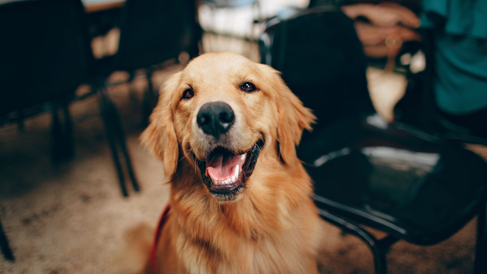
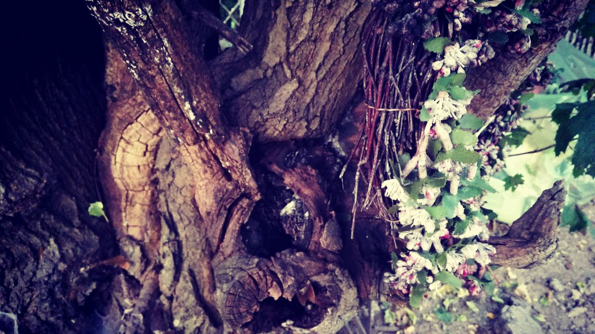

이사 2~3주 전
이동장에 간식 2분×하루 3회. 담요·매트는 세탁하지 말고 그대로 포장. 새 집 평면도에 배변·식기·휴식 위치를 먼저 표시합니다.

이사 당일
- 반려동물은 조용한 방·이동장에 먼저
- 문 개방 구간엔 목줄+담당 1명 고정
- 도착 후 1순위: 물·패드·휴식 매트
- 첫날 새 장난감·사료 교체 금지
이사 당일 반려동물 담당은 1명으로 고정하세요. 문이 열린 구간에서는 이동장+목줄을 동시에 유지하는 편이 안전합니다. 짐 상자 쌓는 소음이 크면 분리 방에 백색 소음을 켜 두세요.
이사 후 1~2주
식욕·배변·수면을 7일 메모. 산책은 10분→15분으로만 점진 증가. 새 동네 소음·이웃 반려동물 반응을 3일째·7일째 비교합니다.

도착 후 48시간은 방문·새 용품·긴 산책을 모두 미루세요. 밤중 울음이 3일 넘으면 메모와 함께 상담 일정을 검토하세요. 이사는 입양 첫 주와 비슷한 적응 기간이 필요합니다.
병원·등록
이사 후 14일 내 인근 동물병원 1곳 전화번호 저장. 동물등록 주소 변경은 30일 내 처리(미변경 시 과태료 60만 원 이하).

새 동네 산책 코스는 3일째부터 10분씩만 늘리세요. 동물등록 주소 변경은 이사 전에 온라인으로 미리 신청할 수 있는 경우도 있습니다.
실전 적용 노트
이사 준비는 짐 싸는 날보다 '이사 2주 전'부터 시작하는 편이 스트레스가 적습니다. 캐리어·이동장을 평소 휴식 공간처럼 열어 두는 것이 첫 단계입니다.
이사 당일은 가능하면 한 사람이 반려동물만 전담하세요. 문이 열린 채로 캐리어를 두지 않습니다.
도착 직후에는 가구 배치보다 휴식 매트·물그릇·사료그릇 위치를 먼저 고정합니다. 3일간 같은 자리가 목표입니다.
기존 담요·장난감 중 냄새가 익숙한 것 1~2개만 골라 가져가세요. 전부 새 것으로 바꾸면 적응이 늦어질 수 있습니다.
이사 후 1주는 방문·대청소·새 사료 전환을 미루는 집이 많습니다.
차량 이동은 2시간마다 물·배변 기회를 주고, 여름에는 에어컨을 미리 가동하세요.
새 집에서 48시간 식욕 저하·은신은 흔할 수 있습니다. 3일 넘으면 메모와 함께 상담을 검토하세요.
베란다·창문 안전은 들어가자마자 5분 점검을 권합니다.
이웃 소음·엘리베이터 사용이 늘면 낮잠 시간대를 조정해 보세요.
이번 주 이사·이동 체크리스트입니다. 당일보다 2주 전 준비가 중요합니다.
- 캐리어·이동장을 평소 휴식처럼 열어 두었습니다.
- 이사 당일 반려동물 전담 담당을 정했습니다.
- 익숙한 담요·장난감 1~2개만 챙겼습니다.
- 도착 직후 휴식 매트·물·사료 위치를 먼저 고정했습니다.
- 이사 후 1주는 방문·사료 전환을 미뤘습니다.
- 차량 이동 시 2시간마다 물·배변 기회를 줬습니다.
- 베란다·창문 안전을 입주 직후 5분 점검했습니다.
- 48시간 식욕 저하를 3일 메모 후 검토합니다.
이사는 사람에게도 스트레스입니다. 반려동물에게는 '같은 냄새·같은 그릇 위치'가 가장 큰 안심입니다.
이사는 2주 전부터 캐리어 적응, 당일 전담 담당, 도착 후 그릇·매트 위치 고정이 핵심입니다. 익숙한 담요 1~2개만 가져가고, 1주는 방문·사료 전환을 미루세요. 차량은 2시간마다 휴식, 베란다·창문은 입주 직후 5분 점검합니다. 48시간 식욕 저하는 흔할 수 있으나 3일 넘으면 메모와 함께 검진을 검토하세요.
이사 후 3일간은 방문·대청소·사료 변경을 미루는 것만으로도 적응 속도가 달라지는 경우가 있습니다.
마무리로, 이번 주에는 체크리스트 3개만 골라 2주 반복해 보세요. 작은 성공이 쌓이면 나머지는 자연스럽게 늘어납니다.
기록이 쌓이면 병원·상담 때 설명이 쉬워집니다. 한 줄 메모라도 같은 항목으로 이어 쓰는 것이 핵심입니다.
완벽한 루틴보다 80% 지켜지는 루틴이 오래 갑니다. 안 된 날은 원인 한 줄만 적고 다음 주에 조정하세요.
오늘 당장 하나만 고른다면, 체크리스트 맨 위 항목부터 시작해 보세요. 나머지는 다음 주로 미뤄도 괜찮습니다.
가족이 함께 돌본다면, 누가 했는지 체크박스 한 칸만 추가해도 누락·중복이 줄어듭니다.
검색으로 답을 찾기 전에 7일 메모를 먼저 정리해 보세요. 증상 설명이 훨씬 빨라지는 경우가 많습니다.
새 용품·새 사료·새 루틴은 동시에 바꾸지 않습니다. 한 가지만 바꾸고 5일 관찰하는 편이 안전합니다.
이번 달 목표는 '매일 완벽'이 아니라 '이번 주 3회 성공'입니다. 0회에서 1회로 바뀌는 것만으로도 충분한 진전입니다.
스트레스 신호(회피·짖음·숨 가쁨)가 보이면 시간을 반으로 줄이세요. 짧게 자주 성공하는 쪽이 학습에 유리합니다.
계절·이사·손님처럼 환경이 바뀌는 주에는 루틴을 단순화하세요. 필수 3개만 지키고 나머지는 다음 주로 미뤄도 됩니다.
사진 한 장이 긴 설명보다 나을 때가 있습니다. 같은 조명·각도로 남기면 변화 비교가 쉬워집니다.
정리하며
이사 당일 새 하네스+새 사료+친구 5명 방문을 동시에 한 사례를 봤습니다.
저는 이사를 '입양 첫 주의 재방송'으로 봅니다. 변화는 하루 1개만.
이사 2주 전 이동장 2분 연습부터 시작해 보세요. 큰 날은 연습의 연장선입니다.
초보자가 자주 실수하는 포인트
- 당일 사료·용품 전부 교체
- 문 열린 채 반려동물 방치
- 도착 직후 1시간 산책
- PET 상자 없이 짐 섞음
- 등록 주소 변경 3개월 미루기
체크리스트
- 이동장 2분×3회/일 연습
- PET 필수 상자 1개 포장
- 새 집 공간 배치도
- 이사 당일 출입 담당 1명
- 도착 후 7일 관찰 메모
자주 묻는 질문
- 이사 전에 산책을 늘려야 하나요?
- 기존 15분 유지가 낫습니다. 이사 적응에 에너지가 쓰이므로 거리를 늘리지 마세요.
- 이사 당일 반려동물은 어디에 두나요?
- 조용한 방·이동장에 먼저 두고, 문 개방 구간에는 담당 1명이 목줄로 동행하세요.
- 도착 후 언제부터 평소 루틴으로 돌아가나요?
- 48시간 최소 루틴 후, 7일 관찰 메모를 보며 산책·방문을 하나씩 복귀하세요.
이 글은 초보자 기준으로 이해하기 쉽게 정리되었으며, 내용은 운영 과정에서 순차적으로 보완될 수 있습니다. 수의사 등 전문가의 진단·처치를 대체하지 않습니다.